Essentiel concours + entraînement. Contenu barré (chirurgie / infiltrations) exclu.
P1
P2
P3
⭐ fréquence concours
1. Morphologie externe P2
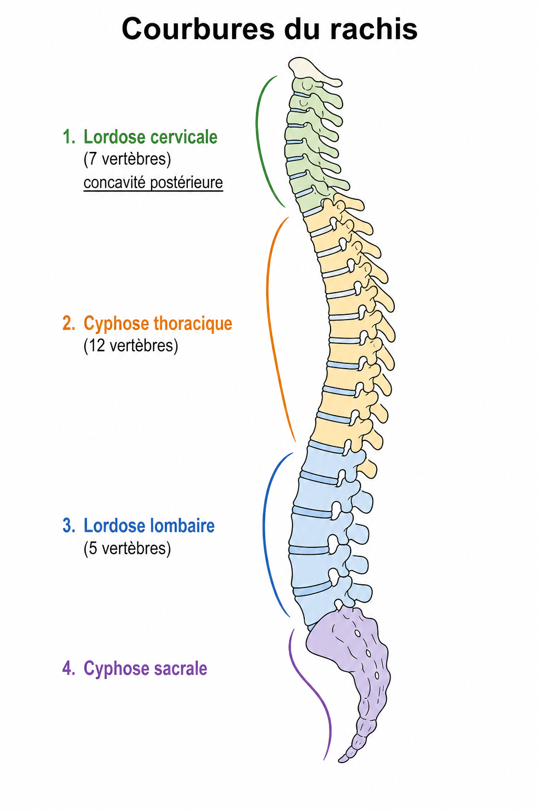
- 2 (cervicale, lombaire) : ⭐ 🆕 · 2 (thoracique, sacrale).
- Comptage : C · T · L · sacrum (5) · coccyx.
12
lordoses
5
cyphoses
7
concavité postérieure
2–4. Repères & vertèbre type P3
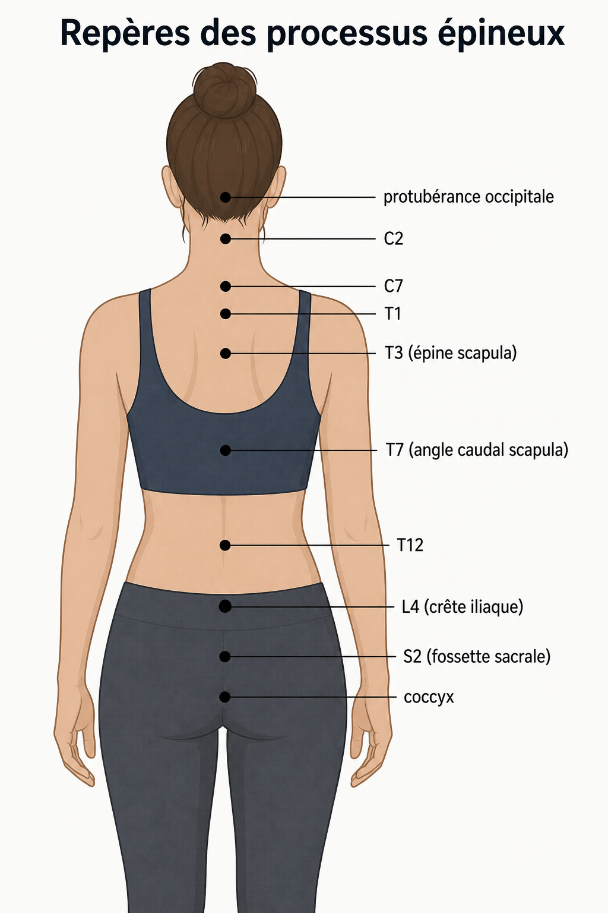

- Repères : C7–T1 · T3 (épine scapula) · T7 (angle caudal) · T12 · (crête iliaque) · S2.
- Foramen vertébral : moelle jusqu’à puis · + LCR / méninges 🆕.
- Arc post. : ⭐ (murs latéraux) · zygapophyses orientées à ° 🆕 · lames · épineux.
45
queue de cheval
L4
pédicules
L2
5. Vertèbres lombales P1
Souvent tombé Épineux non bifide · zygapophyses sagittales.
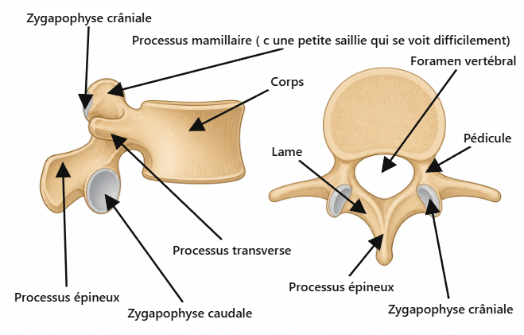
- Processus épineux ⭐⭐⭐ (vertical, court).
- Zygapophyses crâniales en ⭐⭐ · caudales en ⭐ · plan presque ⭐ → flexion-extension.
sagittal
non bifide
dehors
dedans
6–8. Foramen IV, ligaments, disques P2
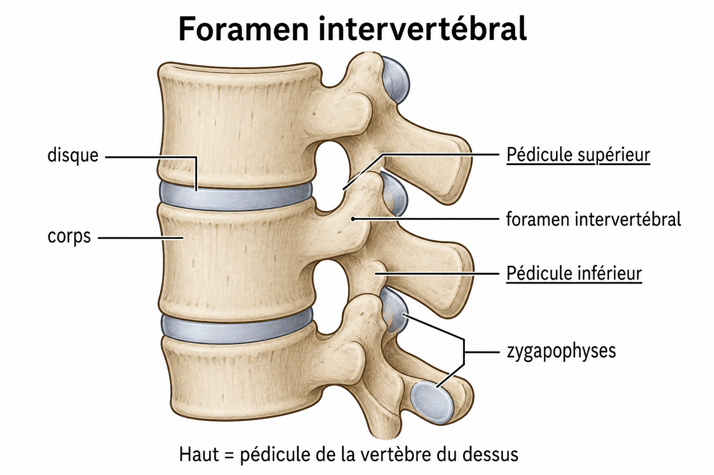
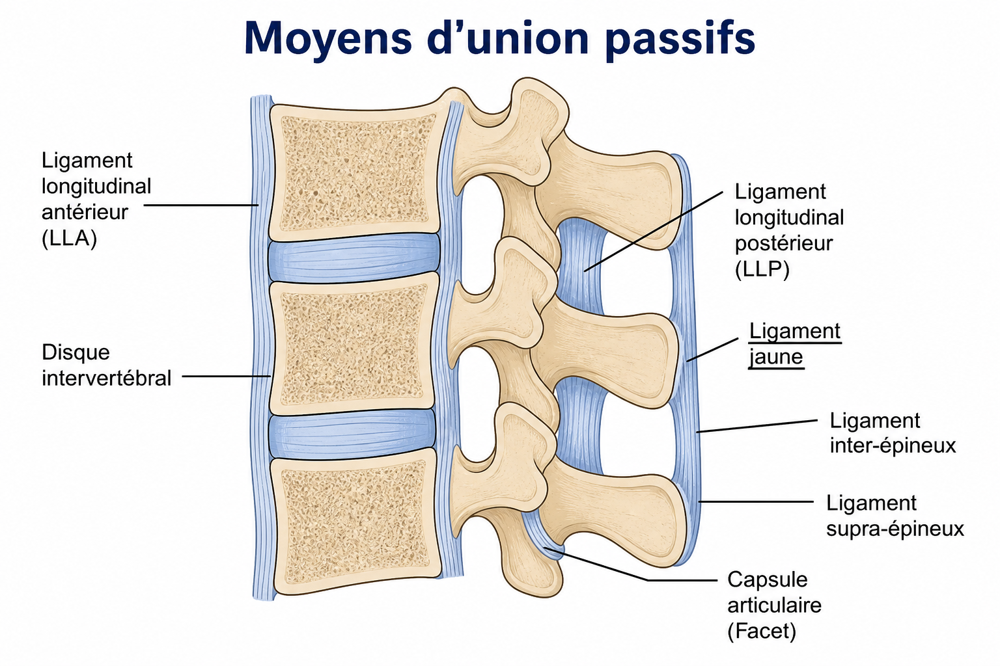
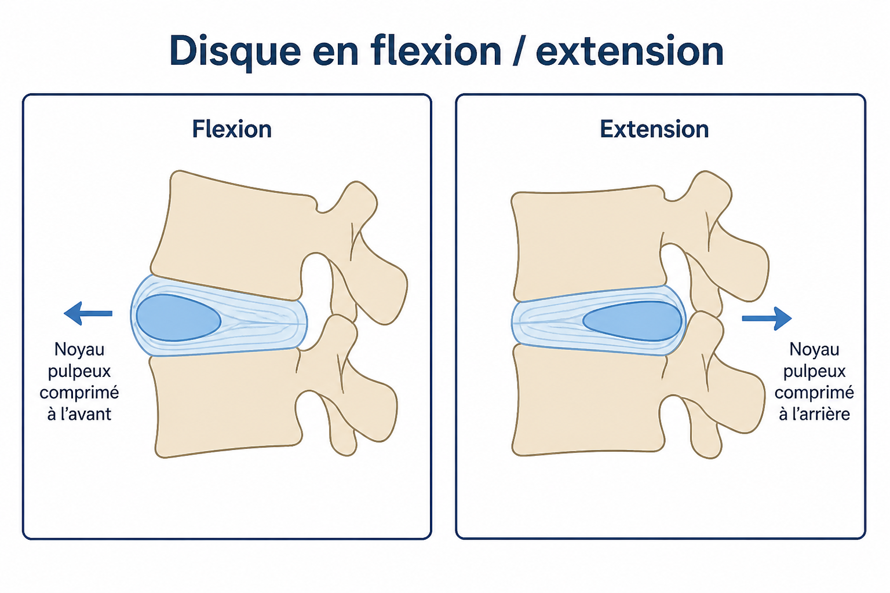
- Foramen IV : haut = ⭐⭐⭐ · bas = ⭐⭐ · avant = corps+disque · arrière = zygapophyses. Racine L3 sort sous L3.
- tendu d’une à l’autre ⭐⭐⭐ · LLA solide en avant · LLP plus fin en lombaire.
- Flexion : disque se tasse en · extension en .
avant
pédicule inférieur
ligament jaune
arrière
pédicule supérieur
lame
9–10. Thoraciques et côtes P2
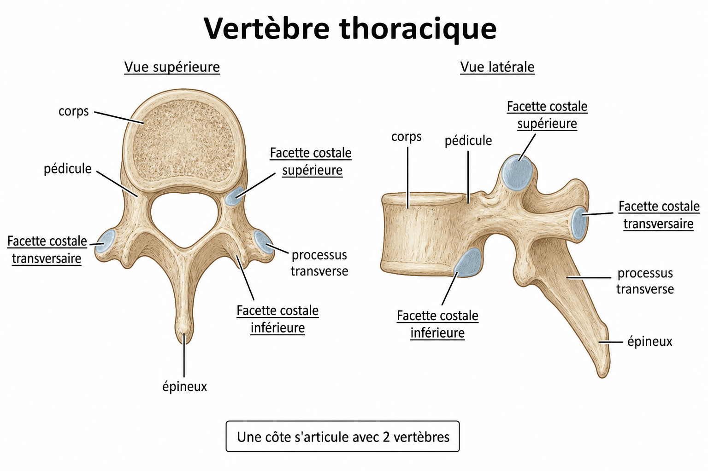
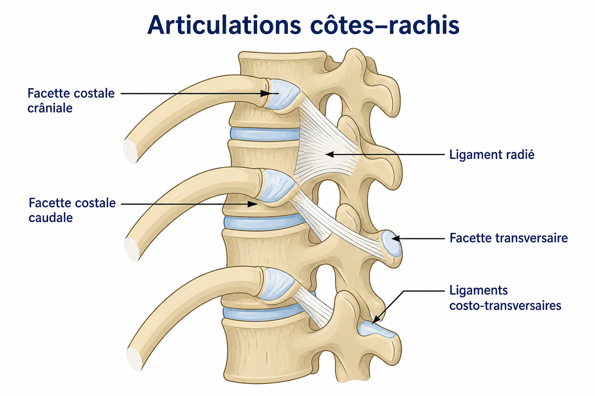
- Une côte s’articule avec vertèbres : facette costale ⭐⭐ (vertèbre du dessous) + ⭐⭐ (du dessus) + disque + facette ⭐⭐.
- 🆕 Ex. côte 5 : T5 sup. + T4 inf. + T5 transversaire. Zygapophyses : plan plutôt .
transversaire
2
inférieure
frontal
supérieure
11. Sacrum P2
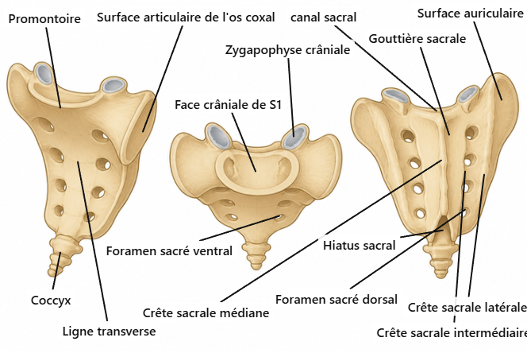
- paires de foramens sacrés ventraux ⭐⭐⭐ (+ 4 dorsaux).
- = orifice distal du canal sacral ⭐⭐⭐.
- Crêtes : médiane = ⭐ · latérale = processus 🆕.
transverses
hiatus sacral
4
épineux
12. Cervicales inférieures C3–C7 P1
Souvent tombé Uncus · foramen transversaire · zygapophyse crâniale.
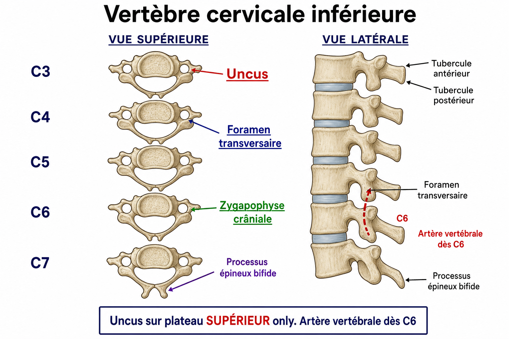
- Trio vue supérieure : ⭐⭐⭐ · ⭐⭐⭐ · ⭐⭐⭐ (orientée en haut et en arrière ⭐).
- Uncus sur le ⭐⭐ uniquement (jamais l’inférieur).
- 🆕 : foramen transversaire plus petit (artère vertébrale ne passe pas) · épineux parfois non bifide.
C7
foramen transversaire
uncus
plateau supérieur
zygapophyse crâniale
13–15. Atlas, axis, atlanto-axoïdienne P2
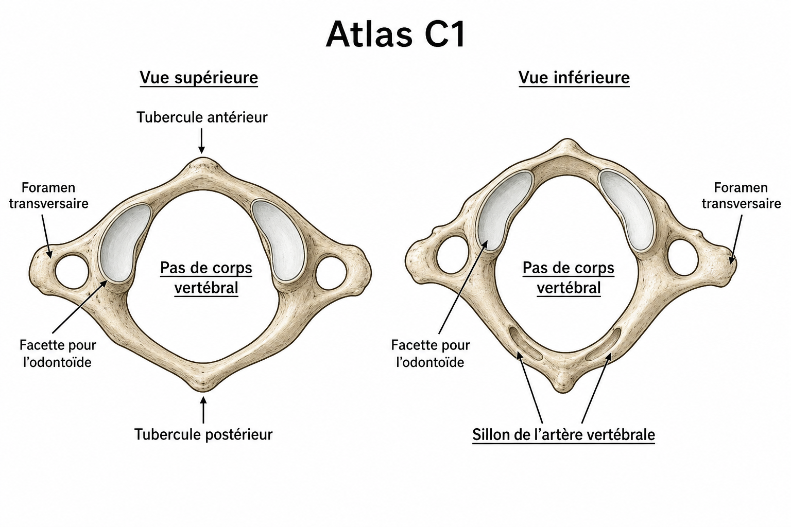
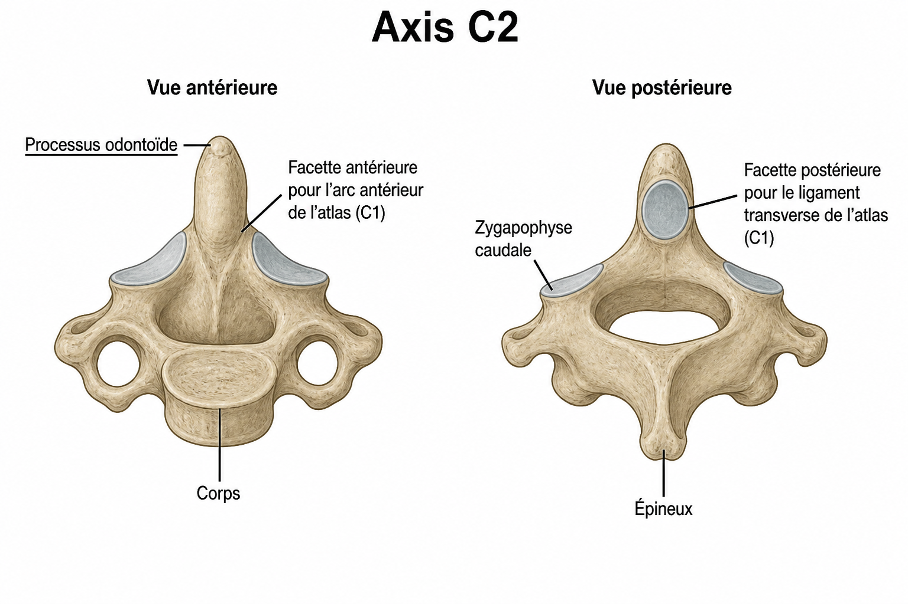
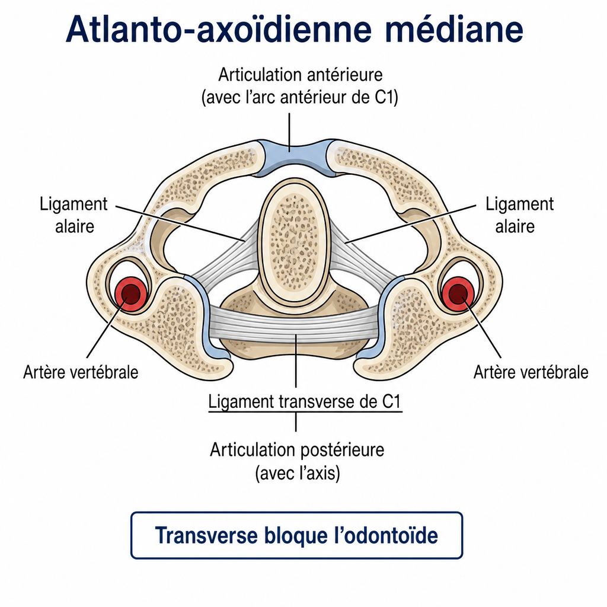
- C1 : pas de ⭐⭐ · de l’artère vertébrale sur l’arc post. ⭐⭐ (passe en arrière de la surface articulaire supérieure ⭐).
- C2 : ⭐⭐⭐ (AAAM ant. = face ant. ↔ arc ant. C1 ⭐ · AAAM post. = face post. ↔ transverse ⭐⭐⭐) · zygapophyse caudale ⭐⭐.
- de C1 ⭐⭐⭐ bloque l’odontoïde contre l’ de C1 (évite compression moelle) · = barre horizontale du cruciforme ⭐.
arc antérieur
sillon
ligament transverse
corps vertébral
processus odontoïde
16–17. Artère vertébrale & ligaments crânio P2
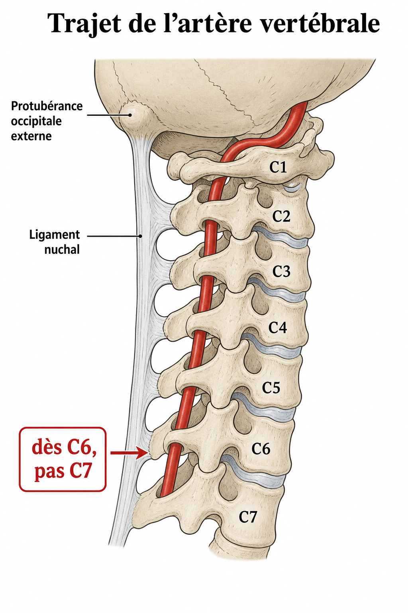
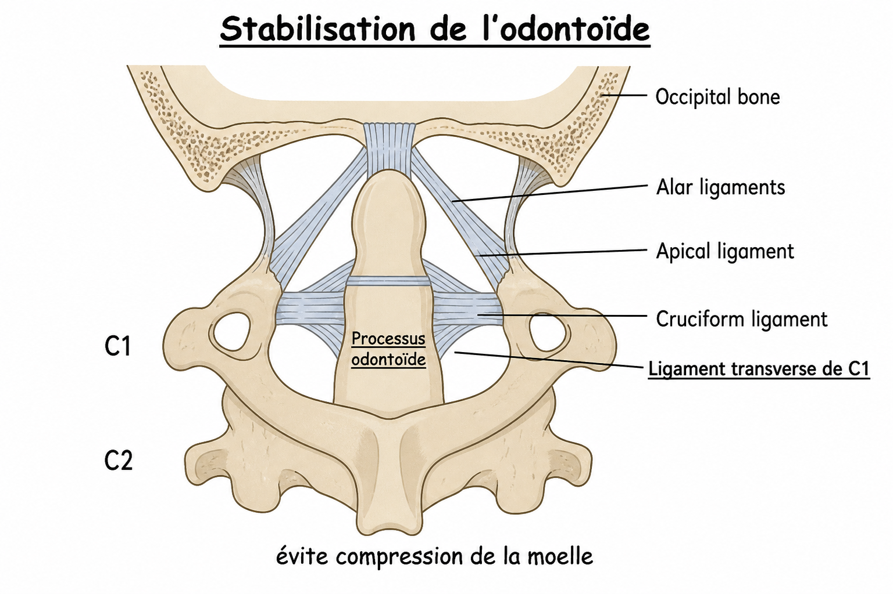
- Artère vertébrale ⭐ : entre dans les foramens dès · remonte jusqu’à C1 · pas par 🆕.
- ⭐⭐⭐ descend en avant des corps · ligament = longitudinal + transverse.
C7
LLA
cruciforme
C6
Flashcards — fin de fiche
P1 — à maîtriser en priorité
Trio cervicale inf. (vue sup.) ?
Uncus · foramen transversaire · zygapophyse crâniale ⭐⭐⭐ (orientée en haut et en arrière ⭐). Uncus = plateau supérieur seulement.
Artère vertébrale : dès quelle vertèbre ?
C6 → C1 · pas C7 🆕.
Lombales : épineux + zygapophyses ?
Non bifide ⭐⭐⭐ · crâniales en dedans · plan sagittal → flex/ext.
P2 — à bien connaître
Limites du foramen IV ?
Haut = pédicule sup. ⭐⭐⭐ · bas = pédicule inf. · avant corps+disque · arrière zygapophyses.
Ligament transverse de C1 ?
Bloque l’odontoïde contre l’arc ant. · AAAM post. ⭐⭐⭐ · barre du cruciforme.
Atlas : particularités ?
Pas de corps ⭐⭐ · sillon artère vertébrale sur arc post. (en arrière de la surface articulaire sup. ⭐).
Axis : zygapophyse caudale ?
Présente ⭐⭐ (schéma C2).
Sacrum : foramens + hiatus ?
4 paires ventrales ⭐⭐⭐ · hiatus = orifice distal canal sacral ⭐⭐⭐.
Côte ↔ vertèbres ?
2 vertèbres + disque + facette transversaire. Ex. côte 5 : T5/T4/T5.
Ligament jaune ?
Tendu d’une lame à l’autre ⭐⭐⭐.
Lordose vs cyphose ?
Lordose = concavité postérieure ⭐ · cyphose = concavité antérieure.
P3 — lecture attentive
Repère L4 ?
Crête iliaque.
Contenu foramen vertébral sous L2 ?
Queue de cheval (+ LCR / méninges).
Flexion : disque se tasse où ?
En avant (extension = en arrière).
Fiche prête — notions ⭐ du poly couvertes.